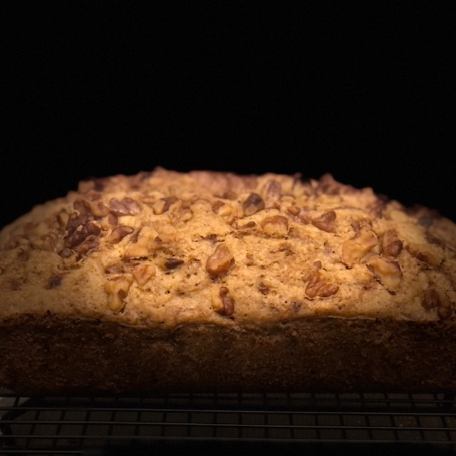

Zucchini Bread

Description
When I bake my grandmother's zucchini bread recipe it smells just like her house.
Ingredients
- 3 slightly beaten eggs
- 1 cup vegetable oil
- 2 teaspoons vanilla
- 3 cups flour
- 2 cups sugar
- 1 cup chopped nuts (I omit this part)
- 2 full cups grated zucchini, including the peel
- 1 teaspoon salt
- 1 teaspoon baking soda
- 1 teaspoon baking powder
- 1 teaspoon cinnamon
Steps
- Combine eggs, oil and vanilla
- Sift dry ingredients together and add to first mixture
- Add zucchini and nuts (if using) and mix well
- Bake in greased loaf pan at 350 degrees for 1 hour or until toothpick inserted comes out clean
- Makes 2 loaves 5x9 inches or 4 loaves 7x4 inches